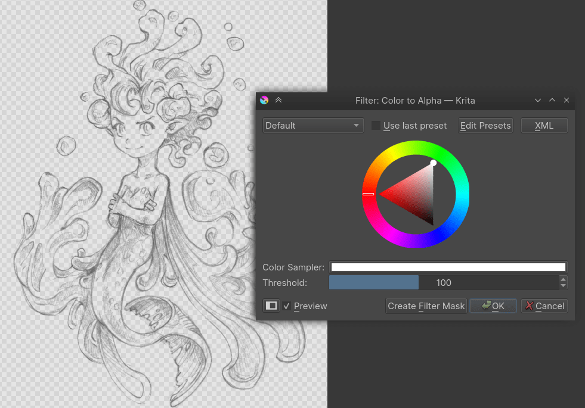
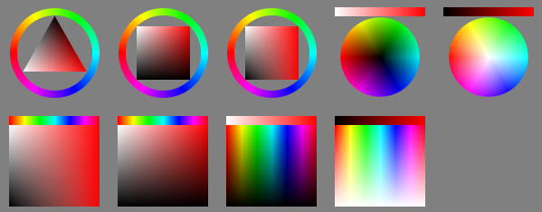
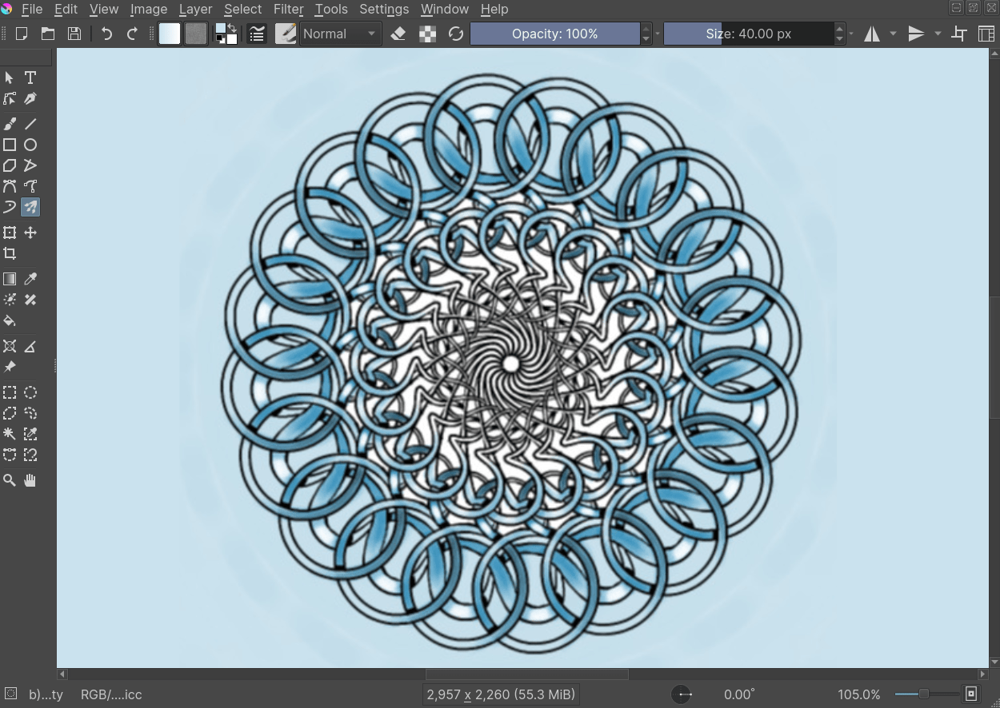
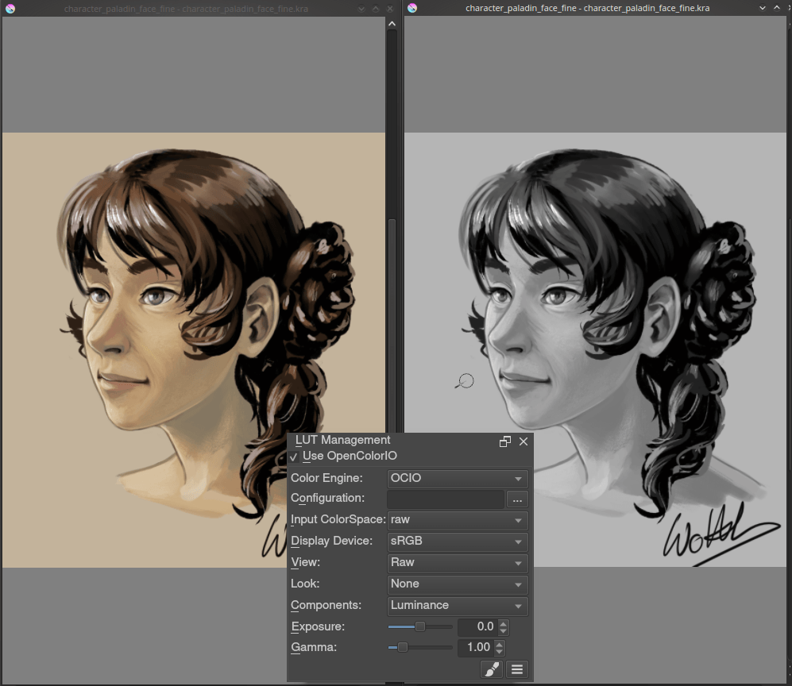
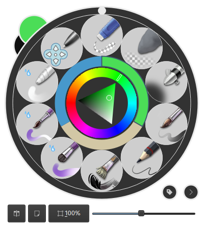

Paint Tool SAI 使用者轉用 Krita 入門介紹¶
在 Krita 如何這樣做呢？¶
This section goes over the functionalities that Krita and Paint Tool SAI share, but shows how they slightly differ.
控制畫布¶
Krita, just like SAI, allows you to flip, rotate and duplicate the view. Unlike SAI, these are tied to keyboard keys.
- 鏡像
This is tied to M key to flip.
- 旋轉
There's a couple of possibilities here: either the 4 and 6 keys, or the Ctrl + [ and Ctrl + ] shortcuts for basic 15 degrees rotation left and right. But you can also have more sophisticated rotation with the Shift + Space + drag or Shift +
 + drag shortcuts. To reset the rotation, press the 5 key.
+ drag shortcuts. To reset the rotation, press the 5 key.- 縮放
You can use the + and - keys to zoom out and in, or use the Ctrl +
shortcut. Use the 1, 2 or 3 keys to reset the zoom, fit the zoom to page or fit the zoom to page width.
You can use the Overview docker in to quickly navigate over your image.
You can also put these commands on the toolbar, so it'll feel a little like SAI. Go to menu item. There are two toolbars, but we'll add to the Main Toolbar.
Then, you can type in something in the left column to search for it. So, for example, 'undo'. Then select the action 'undo freehand stroke' and drag it to the right. Select the action to the right, and click . There, toggle to prevent the action from showing the text. Then press OK. When done right, the Undo should now be sandwiched between the save and the gradient icon.
You can do the same for Redo, Deselect, Invert Selection, Zoom out, Zoom in, Reset zoom, Rotate left, Rotate right, Mirror view and perhaps Smoothing: basic and Smoothing: stabilizer to get nearly all the functionality of SAI's top bar in Krita's top bar. (Though, on smaller screens this will cause all the things in the Brushes and Stuff Toolbar to hide inside a drop-down to the right, so you need to experiment a little).
Hide Selection, Reset Rotation are currently not available via the Toolbar configuration, you'll need to use the shortcuts Ctrl + H and 5 to toggle these.
備註
Krita 3.0 currently doesn't allow changing the text in the toolbar, we're working on it.
右鍵點擊以採樣色彩¶
You can actually set this in . Just double-click the entry that says Ctrl +  shortcut before Sample Foreground Color from Merged Image to get a window to set it to
shortcut before Sample Foreground Color from Merged Image to get a window to set it to  .
.
備註
Krita 3.0 actually has a Paint Tool SAI-compatible input sheet shipped by default. Combine these with the shortcut sheet for Paint Tool SAI to get most of the functionality on familiar hotkeys.
穩定器¶
This is in the tool options docker of the freehand brush. Use Basic Smoothing for more advanced tablets, and Stabilizer is much like Paint Tool SAI's. Just turn off Delay so that the dead-zone disappears.
透明度背景¶
So one of the things that throw a lot of Paint Tool SAI users off is that Krita uses checkers to display transparency, which is actually not that uncommon. Still, if you want to have the canvas background to be white, this is possible. Just choose Background: As Canvas Color in the new image dialogue and the image background will be white. You can turn it back to transparent via menu item. If you export a PNG or JPG, make sure to uncheck Store alpha channel (transparency) and to make the background color white (it's black by default).
Like SAI, you can quickly turn a black and white image to black and transparent with the Filter: Color to Alpha dialog under menu item.
筆刷設定¶
Another, somewhat amusing misconception is that Krita's brush engine is not very complex. After all, you can only change the Size, Flow and Opacity from the top bar.
This is not quite true. It's rather that we don't have our brush settings in a docker but a drop-down on the toolbar. The easiest way to access this is with the F5 key. As you can see, it's actually quite complex. We have more than a dozen brush engines, which are a type of brush you can make. The ones you are used to from Paint Tool SAI are the Pixel Brush (ink), The Color Smudge Brush (brush) and the filter brush (dodge, burn).
A simple inking brush recipe for example is to take a pixel brush, uncheck the Enable Pen Settings on opacity and flow, and uncheck everything but size from the option list. Then, go into brush-tip, pick 自動筆刷 from the tabs, and set the size to 25 (right-click a blue bar if you want to input numbers), turn on anti-aliasing under the brush icon, and set fade to 0.9. Then, as a final touch, set spacing to 'auto' and the spacing number to 0.8.
You can configure the brushes in a lot of detail, and share the packs with others. Importing of packs and brushes can be done via the , where you can import .bundle or .kpp files.
擦除¶
Erasing is a blending mode in Krita, much like the transparency mode of Paint Tool SAI. It's activated with the E key, or you can select it from the Blending Mode drop-down box.
混色模式¶
Krita has a lot of Blending modes, and thankfully all of Paint Tool SAI's are amongst them except binary. To manage the blending modes, each of them has a little check-box that you can tick to add them to the favorites.
Multiple, Screen, Overlay and Normal are amongst the favorites. Krita's Luminosity is actually slightly different from Paint Tool SAI's, and it replaces the relative brightness of color with the relative brightness of the color of the layer.
SAI's Luminosity mode (called Shine in SAI2) is the same as Krita's Luminosity/Shine (SAI) mode, which is new in Krita 4.2.4. The SAI's Shade mode is the same as Color Burn and Hard Mix is the same as the Luminosity and Shade modes.
圖層¶
- Lock Alpha
This is the checker box icon next to every layer.
- Clipping group
For Clipping masks in Krita you'll need to put all your images in a single layer, and then press the 'a' icon, or press the Ctrl + Shift + G shortcut.
- Ink layer
This is a vector layer in Krita, and also holds the text.
- Masks
These grayscale layers that allow you to affect the transparency are called transparency masks in Krita, and like Paint Tool SAI, they can be applied to groups as well as layers. If you have a selection and make a transparency mask, it will use the selection as a base.
- Clearing a layer
This is under , but you can also just press the Del key.
在兩種色彩之間混合¶
If you liked this docker in Paint Tool SAI, Krita's Digital Color Selector docker will be able to help you. Dragging the sliders will change how much of a color is mixed in.
Krita 有甚麼優勝之處呢？¶
更多的筆刷自訂設定¶
You already met the brush settings editor. Sketch brushes, grid brushes, deform brushes, clone brushes, brushes that are textures, brushes that respond to tilt, rotation, speed, brushes that draw hatches and brushes that deform the colors. Krita's variety is quite big.
更多的選色器¶
You can have HSV sliders, RGB sliders, triangle in a hue ring. But you can also have HSI, HSL or HSY' sliders, CMYK sliders, palettes, round selectors, square selectors, tiny selectors, big selectors, color history and shade selectors. Just go into , select an option in the Docker: drop-down box, to change the shape and type of your main color selector.
You can call the color history with the H key, common colors with the U key and the two shade selectors with the Shift + N and Shift + M shortcuts. The big selector can be called with the Shift + I shortcut on canvas.
幾何圖形工具¶
Circles, rectangles, paths, Krita allows you to draw these easily.
多重筆刷、鏡像對稱、四方連續環繞模式¶
These tools allow you to quickly paint a mirrored image, mandala or tiled texture in no time. Useful for backgrounds and abstract vignettes.
繪畫輔助尺¶
The painting assistants can help you to set up a perspective, or a concentric circle and snap to them with the brush.

Krita's vanishing point assistants in action.¶
鎖定圖層¶
Lock the layer with the padlock, so you don't draw on it.
快速選擇圖層¶
If you hold the R key and press a spot on your drawing, Krita will select the layer underneath the cursor. Really useful when dealing with many layers.
色彩管理¶
This allows you to prepare your work for print, or to do tricks with the LUT docker, so you can diagnose your image better. For example, using the LUT docker to turn the colors grayscale in a separate view, so you can see the values instantly.
進階變形工具¶
Not just rotate and scale, but also cage, wrap, liquify and non-destructive transforms with the transform tool and masks.

更多的濾鏡及非破壞性的濾鏡圖層和遮罩¶
With filters like color balance and curves you can make easy shadow layers. In fact, with the filter layers and layer masks you can make them apply on the fly as you draw underneath.

浮動畫具板¶
This is the little circular thing that is by default on the right click. You can organize your brushes in tags, and use those tags to fill up the pop-up palette. It also keeps a little color selector and color history, so you can switch brushes on the fly.
與 SAI 相比之下 Krita 欠缺了甚麼呢？¶
Variable width vector lines
The selection source option for layers
Dynamic hard-edges for strokes (the fringe effect)
No mix-docker
No Preset-tied stabilizer
No per-preset hotkeys
總結¶
I hope this introduction got you a little more excited to use Krita, if not feel a little more at home.